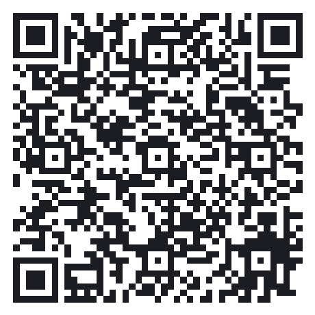

Estude em blocos de foco, com pausas no meio. Simples assim.
A ideia: você foca por um tempo (ex.: 25 min), faz uma pausa curta,
e a cada 4 focos tira uma pausa longa. Cada foco concluído é um “pomodoro”. 🍅
▶ O timer
▶ / ⏸ — inicia ou pausa a contagem.
↺ — reinicia (volta pro foco do zero).
⏭ — pula a fase atual (não conta como pomodoro).
O anel ao redor do tempo mostra o quanto falta.
🎨 Fases e cores
A cor muda conforme a fase, pra você saber num olhar:
FOCO hora de estudar.
PAUSA CURTA respiro rápido.
PAUSA LONGA descanso maior, a cada 4 pomodoros.
✓ Tarefas
Uma lista de “a fazer” que se executa sozinha:
Digite uma tarefa e (opcional) quantos 🍅 ela deve levar. Aperte Enter ou ＋.
Clique numa tarefa (ou no ▶ dela) — o foco começa naquela tarefa na hora.
A cada foco concluído, a tarefa ativa ganha +1 🍅. Sem estimativa, 1 foco já conclui; com estimativa, conclui ao chegar em 3/3.
Depois da pausa, ela retoma a mesma tarefa (se ainda falta) ou puxa a próxima da lista.
✓ conclui na mão · ✕ exclui.
Na aba Concluídas fica o histórico, agrupado por dia, com horário e 🍅 gastos.
📊 Estatísticas
Hoje — pomodoros e tempo de foco do dia (aparece embaixo do timer).
Meta diária — quando você bate, o número fica verde.
Sequência (streak) — dias seguidos estudando 🔥.
Gráfico de 7 dias — seus pomodoros da semana.
⚙ Configurações
Durações — foco, pausa curta, pausa longa e quantos pomodoros até a pausa longa.
Meta diária de pomodoros.
Som do alarme — Bip, Sino, Digital, ou ＋ Adicionar som… pra usar um arquivo seu (mp3, wav…). Use o ▶ pra ouvir e o ✕ pra remover.
Volume, tique-taque no foco e ruído ambiente (branco/marrom) pra concentração.
Iniciar fase sozinho, pausar ao bloquear a tela e iniciar com o Windows.
📌 Janela e bandeja
📌 — fixa o widget sempre no topo (liga/desliga).
— — esconde na bandeja do sistema (perto do relógio). Clique no ícone da bandeja pra trazer de volta.
✕ — fecha o app.
Arraste pela barra de cima pra mover; arraste a borda pra redimensionar.
Ao fim de cada fase o alarme toca e a barra de tarefas pisca pra te avisar.
⌨ Atalhos de teclado
Espaço — iniciar / pausar.
R — reiniciar.
💛 Apoie o projeto
O Pomofoco é gratuito e independente. Se ele te ajuda nos estudos, considere mandar um agradecimento via Pix. 🍅
Muito obrigado pela sua cooperação! 💛
O Pomofoco nasceu pra deixar seus estudos mais leves e focados — e saber que ele te ajudou já é a melhor recompensa.
É um projeto independente, mantido nas horas livres e com muito carinho.
Sua contribuição, de qualquer valor, ajuda a manter o projeto vivo, custear o tempo de desenvolvimento e trazer novas melhorias.
Não existe valor mínimo: o que importa é o gesto. 🙏
Escaneie o QR no app do seu banco ou copie a chave Pix. De coração, obrigado por fazer parte dessa jornada de foco! 🍅
Abra o app do seu banco → Pix → Ler QR Code e aponte aqui

ou copie a chave:
Chave Pix (aleatória)
f5d89e92-9364-4c56-93c6-d9c6d472d973
00020126580014br.gov.bcb.pix0136f5d89e92-9364-4c56-93c6-d9c6d472d9735204000053039865802BR5916THIAGO A QUIRINO6007MARINGA62070503***6304F3C4
Dica: monte sua lista de tarefas no começo do estudo, clique na primeira e deixe rolar.
Quando precisar de silêncio total, deixe o widget na bandeja — ele continua contando e te avisa na hora da pausa.
Feche esta janela quando quiser — o timer continua rodando no widget.